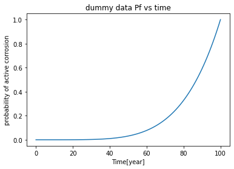
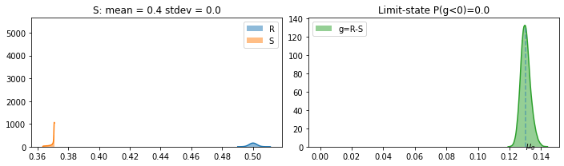
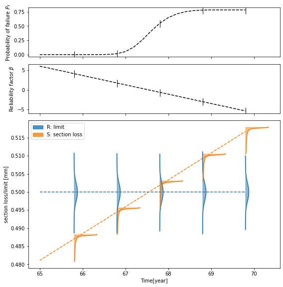

corrosion module example
Input Raw data
moisture
temperature
corrosion state determined by chloride and carbonation from other modules
Output
icorr and corrosion rate
accumulated section loss with time
[1]:
%matplotlib inline
import numpy as np
from corrosion import CorrosionModel, SectionLossModel
import math_helper as mh
import matplotlib.pyplot as plt
[2]:
class Param: pass
raw_pars = Param()
# geometry and age
raw_pars.d = 0.04 # cover depth [m]
raw_pars.t = 3650 # age[day]
# concrete composition
raw_pars.cement_type = 'Type I'
raw_pars.concrete_density = 2400 #kg/m^3
raw_pars.a_c = 2 # aggregate(fine and coarse)/cement ratio
raw_pars.w_c = 0.5 # water/cement ratio
raw_pars.rho_c= 3.1e3 # density of cement particle [kg/m^3]
raw_pars.rho_a= 2600. # density of aggregate particle(fine and coarse) range 2400-2900 [kg/m^3]
# concrete condition
raw_pars.epsilon = 0.25 # porosity of concrete
raw_pars.theta_water = 0.12 # volumetric water content
raw_pars.T = 273.15+25 # temperature [K]
[5]:
# initialize and run model
model_corr = CorrosionModel(raw_pars)
model_corr.run()
# result
model_corr.icorr
# icorr
print(f"icorr [A/m^2]: {model_corr.icorr.mean()}")
# section loss
model_corr.x_loss_rate
print(f"section loss rate [mm/year]: {model_corr.x_loss_rate.mean()}")
icorr [A/m^2]: 0.0064073716552996264
section loss rate [mm/year]: 0.007420514521903584
Accumulated section loss with the increasing probability of active corrosion
[6]:
# time steps
t_lis = np.linspace(0, 365*100 , 100)
# Given probability of active corrosion with time, and the section loss (determined by membrane, carbonation, chloride module)
# dummy data used for this example
pf_lis = np.linspace(0,1,len(t_lis))**5
plt.plot(t_lis / 365, pf_lis)
plt.title('dummy data Pf vs time')
plt.xlabel('Time[year]')
plt.ylabel('probability of active corrosion')
[6]:
Text(0, 0.5, 'probability of active corrosion')

[13]:
# prepare Param object for section loss object
pars_sl = Param()
pars_sl.x_loss_rate = model_corr.x_loss_rate.mean() # mm/year mean section loss rate from the corrosion model
pars_sl.p_active_t_curve = (pf_lis, t_lis) # use dummy data for this example
# critical section loss from the external structural analysis
pars_sl.x_loss_limit_mean = 0.5 # mm
pars_sl.x_loss_limit_std = 0.5 * 0.005 # mm
# initialize section loss model object
model_sl = SectionLossModel(pars_sl)
# run model for one time step, 70 year
model_sl.run(t_end = 70)
model_sl.postproc(plot=True)
Pf(g = R-S < 0) from various methods
sample count: 1.0
g integral: 0.999993342633605
R S integral: 0.7816847143205294
beta_factor: -5.814361751742518
-0.018189702041503546 4.874164587699946e-50

[9]:
# run the model through a list of year steps
pf_sl, beta_sl = model_sl.section_loss_with_year(year_lis=np.arange(65,70,0.2), amplify=5e-4)
warning: very small Pf
warning: very small Pf
warning: very small Pf
warning: very small Pf
warning: very small Pf

[ ]: